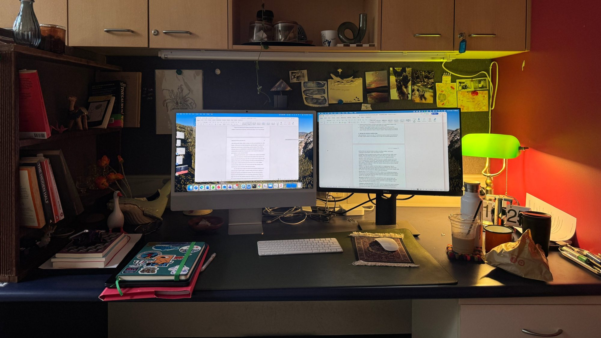
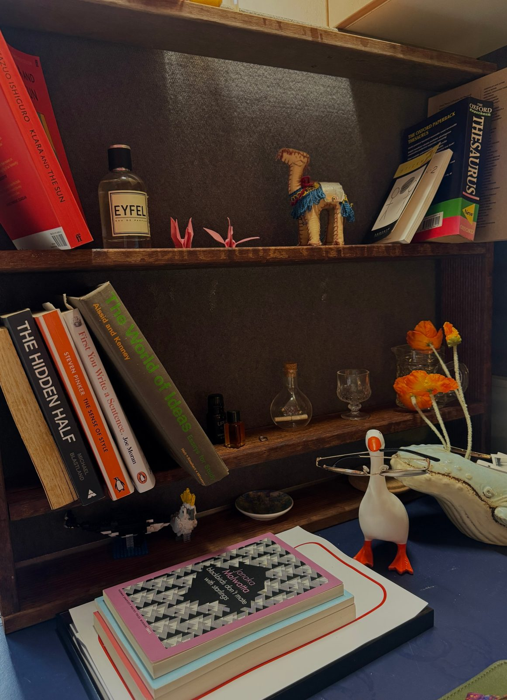

PhD candidate in psychology · The University of Queensland
Lately I'm curious about how we come to care for strangers

I'm a PhD candidate in the School of Psychology at the University of Queensland, supervised by Professor Eric Vanman and Dr Leah Henrickson. I'm interested in social psychology and cognition: how what we know may shape how we feel.
I also tutor undergraduate psychology at UQ, and I write poetry. My first collection is on its way.
When I'm not at my desk at uni, I dabble in running, attempt whatever creative project I've found on Pinterest that week, and write poems whenever something moves me.
Always open to collaborations. Get in touch →
Not quite a straight line.
My projects look at how beliefs, emotions and technology shape the way we relate to one another. Open any of them for more.
I get to engage with students in the ways I would have loved: making classes feel inclusive, fun, and like everyone is smart enough to have a go.
A boarding pass for each trip, and a little Story Bridge for the ones at home in Brisbane.

The other side of my desk.
I write about the grandness in unremarkable things. My poems are shaped deeply by world events, and by the necessity to care, even when it's uncomfortable.
I try to bring depth into everyday language, so that everyone can take something from my writing. My work has resonated with UNICEF, Penguin, and a range of artists, prominent chefs, activists and singers.
In progress: I'm self-publishing my first collection.
Read my poems on Instagram @haneens.ao →Every year, thousands of humpbacks travel up the east coast from Antarctica to breed and give birth in the warm waters off Queensland, then head back south with their calves. Brisbane sits right on that route, so from around June to November the bay and the coast nearby are full of them.
A recent drone purchase opened up a whole new way of seeing them. Watching a pod glide beneath the surface from above still gives me a thrill every time.
Open to collaborations, and happy to talk research or poetry. Use my UQ email for academic things and my writing email for poetry.
Humpbacks on their migration along the Queensland coast, from the boat and from above. Tap a photo to enlarge.